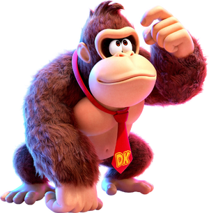
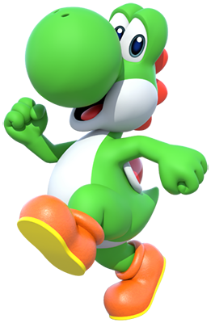
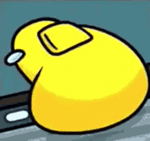

Mario

Mario é o protagonista da franquia Super Mario, conhecido mundialmente como o
encanador italiano baixinho e bigodudo que usa um boné vermelho macacão azul, e
também por falas marcantes, como "It's-a me, Mario!"
e o seu famoso som de derrota:
Nos jogos, sua principal habilidade é saltar sobre obstáculos e inimigos, podendo derrotá-los caindo sobre eles. Mario também pode quebrar blocos com, diferente do que muitos pensam, socos! coletar moedas e usar itens especiais encontrados em blocos da sorte flutuantes. Além disso, ele pode entrar em canos verdes que levam a áreas secretas e/ou a outras partes da fase.
Luigi

Luigi é o irmão mais novo de Mario e um dos personagens principais da franquia Super Mario. Conhecido pelo seu bigode e por usar seu macacão azul, seu boné verde, Luigi é o companheiro de Mario em diversos jogos da franquia (geralmente podendo ser controlado quando um segundo jogador se conecta na fase).
Luigi já foi protagonista em diversos jogos próprios, como o jogo Luigi's Mansion. Uma de suas
habilidades mais famosas é sua capacidade de saltar mais alto que seu irmão Mario.
Sua frase principal é "Luigi is number one!".
Peach

Peach é a princesa do Reino Cogumelo e uma das personagens mais conhecidas
da franquia Super Mario. Conhecida pelo seu vestido rosa e coroa dourada Peach é uma grande
amiga de Mario.
Nos jogos principais, Mario busca salvá-la de Bowser (vilão da série) passando por diversas fases.
Quando resgatada,
Peach fala sua famosa frase "Thank you, Mario!".
Bowser

Bowser é o antagonista da maioria dos jogos do nosso querido encanador. Também conhecido como Rei Koopa, nos jogos, é de se esperar que seja ele quem sequestra a Princesa Peach. Para tentar impedir a chegada do Mario, Bowser envia levas de inimigos, cria labirintos, envia até seus filhos para batalhar contra ele.
Toad

Toad é pequeno morador do Reino Cogumelo que tem um cogumelo na sua cabeça, que é uma parte do corpo dele. Leal assistente da Princesa Peach e como cidadâo do Reino cogumelo.
.Donkey Kong jr

Donkey Kong Jr é O gorila atual, famoso pela gravata vermelha, vive na Donkey Kong Island com sua família e amigos, protegendo seu estoque de bananas dos vilões da tribo Kremling.
.Yoshi

Yoshi é o dinossauro que atua como montaria e de ajudante para o protagonista. Suas habilidades principais incluem usar sua longa língua para engolir inimigos, transformá-los em ovos e o pulo flutuante, em que o Yoshi começa a correr no ar e consegue ganhar um pouco de altura no processo.
.Wario

Wario é um anti-heroi e arquirrival do Mario, sendo seu. Enquanto herói, salva o dia enfrentando inimigos por altruísmo, porém, com o tempo, a ganância virou seu único objetivo, sendo movido quase que exclusivamente por ela.
.